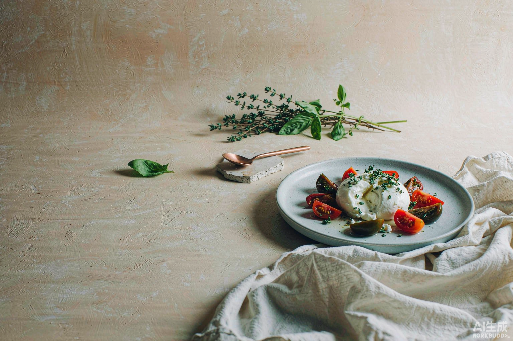

陈拾 · 主理人
本季构成
这十二样不是随意凑的。它们彼此能搭出至少九道菜—— 番茄配罗勒，栗子配南瓜，无花果配一点咸芝士。
配齐计算器
勾一下冰箱里已经有的。缺几样，就送几样，就付几样的钱。
「好的食材其实不需要被料理。
它只需要被准时送到。」
陈拾 · 主理人 · 第二十一期
订阅
价格按当期实际内容浮动，不是固定套餐。 每期开箱前三天会发短信，你可以在那一刻决定要不要。
本季订阅 · 霜降
虚构品牌 · 本页面仅用于演示
拾季 · 账号
账号存在这台浏览器里，换设备不会同步。清除浏览器数据会一并清掉。
这个浏览器不允许本地保存，账号只在这一页有效，刷新后需要重新登录。